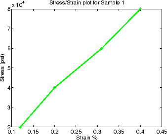

| 項目一覧… |
|---|
ポップアップ ウィンドウにクラス コードを開くポップアップ ウィンドウにクラス コードを開く - このリンクを使用すると、このクラスの最終コードと、説明の節へのリンクが表示されます。
MATLAB® エディターにクラス定義ファイルを開くMATLAB エディターにクラス定義ファイルを開く－ このリンクを使用すると、ユーザー バージョンのクラスの保存や修正を行うことができます。
クラスを使用するには、@TensileData というフォルダーを作成して、TensileData.m をこのフォルダーに保存します。@TensileData の親フォルダーは、MATLAB パス上になければなりません。
この例は、特定の構造をもつデータを保存するクラスを定義します。データを保存するためにコンシステントな構造を使用すると、データに作用する関数の作成がより簡単になります。特定のデータ要素を記述するフィールド名をもつ MATLAB struct も、データをまとめる便利な方法です。しかし、クラスを使用すると、データ ストレージ (プロパティ) とそのデータに実行できる操作 (メソッド) を定義でき、この例で説明するような利点があります。
この例では、データは、さまざまな材料の弾性率の計算に使用される、引張応力/歪みの測定を表します。簡単に言えば、応力は材料に加えられる力であり、歪みはその結果の変形です。それらの比は、材料の特性を特徴付けます。これは、過程を単純化し過ぎですが、この例では十分です。
次の表は、データの構造を表します。
データ | 説明 |
|---|---|
Material | 試験する材料の種類を表す文字列 |
SampleNumber | 特定の試験サンプル数 |
Stress | 試験中にサンプルに加えられる応力を表す double のベクトル。 |
Strain | 加えられた応力の値と、そのときの歪みを表す double のベクトル。 |
Modulus | 応力と歪みのデータから計算される、試験材料の弾性率を double で定義します。 |
このクラスは、データを保存するために設計されるので、データの各要素のプロパティを定義します。以下のクラス ブロックは、5 つのプロパティを定義し、それぞれが含むデータ型に従い、プロパティの初期値を指定します。初期値を定義する必要はありませんが、オブジェクト作成中にプロパティ値が割り当てられない場合には、初期値が有効になります。
この例では、クラスの簡単な実装から始め、特性がクラスの有効性をどのように向上させるかを説明するために、この実装を基に構築することに注意してください。
classdef TensileData properties Material = ''; SampleNumber = 0; Stress Strain Modulus = 0; end end
次のステートメントを使用して、TensileData オブジェクトを作成して、データを割り当てます。
td = TensileData;
td.Material = 'Carbon Steel';
td.SampleNumber = 001;
td.Stress = [2e4 4e4 6e4 8e4];
td.Strain = [.12 .20 .31 .40];
td.Modulus = mean(td.Stress./td.Strain);
TensileData オブジェクト (上記ステートメントの td) は、MATLAB 構造体配列と同様に取り扱います。ただし、一般的なデータ構造体を使用する場合と比較すると特殊化されたデータ構造体をクラスとして定義する方が、以下の MATLAB struct のように利点があります。
フィールド名のスペルを誤ると、エラーが表示されます。たとえば、以下を入力します。
>>td.Modulis = ...
構造体配列に新しいフィールドが追加されますが、td が TensileData クラスのインスタンスであると、エラーが返されます。
クラスは再利用が容易です。いったんユーザーがクラスを定義すると、新しい特性を追加するサブクラスを使用して容易に拡張できます。
クラスは識別が容易です。クラスは名前をもつので、関数 whos, class やワークスペース ブラウザーを使用して、オブジェクトを識別できます。クラス名が意味のある名前であると、履歴を参照しやすくなります。
クラスまたは値を含む、フィールドに値が割り当てられると、クラスは個々のフィールドを有効にできます。
クラスはフィールドへのアクセスを制限できます。たとえば、特定のフィールドの読み込みは許可し、変更は不可能とすることができます。
次の節では、TensileData クラスにおいて、型検査を追加してプロパティ アクセスを制限する方法を説明します。
プロパティの set アクセス メソッドを定義することによって、プロパティを設定できる値を制限します。MATLAB ソフトウェアは、オブジェクトの作成時など、値がプロパティに設定されるときに必ずこの関数を呼び出します。
プロパティ set メソッドは、Material プロパティに割り当て可能な文字列を、aluminum、stainless steel、carbon steel のいずれかに限ります。
methods ブロックにこの関数定義を追加します。
classdef TensileData properties Material = 'carbon steel'; SampleNumber = 0; Stress Strain Modulus end % properties methods function obj = set.Material(obj,material) if ~(strcmpi(material,'aluminum') ||... strcmpi(material,'stainless steel') ||... strcmpi(material,'carbon steel')) error('Material must be aluminum, stainless steel, or carbon steel') end obj.Material = material; end % set.Material end% methods end% classdef
Material プロパティの設定が試みられると、MATLAB ランタイムは、プロパティの関数 set.Material にオブジェクトと指定した値 (入力引数 obj と material) を渡します。この場合、値が許容された値でない場合、関数はエラーを返します。そうでない場合、指定した値はプロパティの設定に使用されます。set メソッドのみが、オブジェクトのプロパティに (プロパティ set メソッドを呼び出さずに) 直接アクセスできます。
以下に例を示します。
td = TensileData; td.Material = 'composite'; TensileData/set.Material の使用エラー。Material は aluminum、stainless steel、carbon steel のいずれかでなければなりません
以下のコンストラクター関数を追加することによって、TensileData クラスのインターフェイスを単純化できます。
コンストラクターへの引数として、データを渡すことができる
プロパティ値の割り当て
コンストラクターは、クラスと同じ名前をもつメソッドです。
function td = TensileData(material,samplenum,stress,strain) if nargin > 0 % Support calling with 0 arguments td.Material = material; td.SampleNumber = samplenum; td.Stress = stress; td.Strain = strain; end end % TensileData
コンストラクターを使用すると、以下のステートメントで、データを使用して完全な TensileData オブジェクトを作成できます。
td = TensileData('carbon steel',1,[2e4 4e4 6e4 8e4],[.12 .20 .31 .40]);
コンストラクター関数は、Modulus プロパティの値に対する入力引数をもたないことに注意してください。これは、Modulus の値が以下のように決まるためです。
Stress と Strain プロパティの値から容易に計算できます。
Stress または Strain プロパティの値が変化すると、変更する必要があります。
したがって、Modulus プロパティの値は、値が要求された場合にのみ計算するのが適切です。次の節で説明するプロパティ get access メソッドを使用してこれを行うことができます。
TensileData オブジェクトは、Modulus プロパティの値を保存しません。その代わり、この値は、要求されたときに計算されます。この手法によって、Modulus プロパティの値を再計算する必要なく、Stress と Strain プロパティのデータを更新できます。
Modulus プロパティは Stress と Strain に依存するので、その Dependent 属性は論理値 true に設定します。これを行うには、他の properties ブロックを作成して Dependent 属性を設定します。
さらに、get.Modulus メソッドは計算して Modulus プロパティの値を返すので、プロパティの SetAccess 属性を private に設定する必要があります。
properties (Dependent = true, SetAccess = private) Modulus end
methods ブロックに、プロパティ get メソッドを定義します。
methods function modulus = get.Modulus(obj) ind = find(obj.Strain > 0); % Find nonzero strain modulus = mean(obj.Stress(ind)./obj.Strain(ind)); end % Modulus get method end % methods
この関数は、分母データのゼロを除いた後に、応力と歪みデータの比の平均を計算します。
MATLAB ランタイムは、プロパティのクエリがあると、get.Modulus メソッドを呼び出します。次に、例を示します。
td = TensileData('carbon steel',1,[2e4 4e4 6e4 8e4],[.12 .20 .31 .40]);
td.Modulus
ans =
1.9005e+005
Dependent プロパティの値を設定するには、クラスにプロパティの set メソッドを実装しなければなりません。Modulus プロパティの設定を明示的に有効にする必要はありませんが、set メソッドを使用すると、エラー メッセージをカスタマイズできます。Modulus プロパティの set メソッドは、プロパティの現在の値を参照して、エラーを返します。
methods function obj = set.Modulus(obj,~) fprintf('%s%d\n','Modulus is: ',obj.Modulus) error('You cannot set Modulus explicitly'); end % Modulus get function
TensileData クラスは、disp メソッドを実装できます。このメソッドは、このクラスのオブジェクトが (たとえば、セミコロンで終わらない割り当てステートメントによって) コマンド ラインに表示される場合、表示を制御します。
TensileData disp メソッドは、Material, SampleNumber, Modulus プロパティの値を表示します。これらのプロパティはコマンド ウィンドウで容易に見られない生データを含むので、Stress と Strain プロパティのデータを表示しません。plot メソッド (次の節で説明します) は、応力と歪みのデータを表示する、より適切な方法を提供します。
disp メソッドは、fprintf を使用して、コマンド ウィンドウに書式付きテキストを表示します。
methods function disp(td) fprintf(1,'Material: %s\nSample Number: %g\nModulus: %1.5g\n',... td.Material,td.SampleNumber,td.Modulus); end % disp end % methods
加えられた張力の範囲での材料の動作を知るには、応力/歪みのデータのグラフ表示が役立ちます。TensileData オブジェクトは、応力と歪みのデータを含むので、このデータをプロットするように設計されたクラス メソッドを定義すると役立ちます。
TensileData plot メソッドは、応力と歪みのデータのライン グラフを作成し、タイトルと座標軸のラベルを追加して、張力データの記録の標準化されたグラフを作成します。
function plot(td,varargin) plot(td.Strain,td.Stress,varargin{:}) title(['Stress/Strain plot for Sample',... num2str(td.SampleNumber)]) ylabel('Stress (psi)') xlabel('Strain %') end % plot
このメソッドの第 1 の引数は TensileData オブジェクトです。このオブジェクトには、データが含まれ、組み込み関数 plot ではなくTensileData クラスの plot メソッドに送信するために、MATLAB ランタイムで使用されます。
続く引数の可変リストは、メソッド内から直接組み込み関数 plot に渡されます。このため、TensileData plot メソッドは、組み込み関数 plot のような動作が可能になります。これにより、ユーザーはラインを指定する引数またはプロパティ名/値の組をデータと共に渡すことができます。
たとえば、以下のオブジェクトをプロットします。
td = TensileData('carbon steel',1,[2e4 4e4 6e4 8e4],[.12 .20 .31 .40]); plot(td,'-+g','LineWidth',2)
次のグラフが作成されます。
